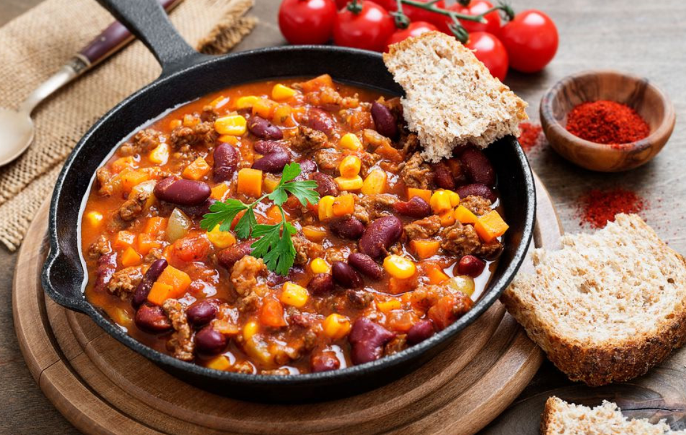

Vegane Chili sin Carne
Ein herzhaftes und gesundes veganes Chili sin Carne ist schnell zubereitet und sorgt für eine nahrhafte, proteinreiche Mahlzeit. Mit nur 30 Minuten Aufwand kannst du ein würziges, sättigendes und gesundes Abendessen auf den Tisch bringen.Lust auf was Neues?
Pfanne vs. Wok - Was ist besser?
Ob Pfanne oder Wok besser ist, hängt ganz vom Gericht ab. Die Pfanne punktet mit Vielseitigkeit: Sie ist perfekt zum Braten von Fleisch, Fisch oder Pfannkuchen. Ihre flache Form sorgt für eine gleichmäßige Hitzeverteilung und ist ideal für kleinere Portionen.
Der Wok hingegen ist unschlagbar für Rührgerichte. Dank seiner hohen Seitenwände lassen sich Zutaten leicht wenden, und er bietet viel Platz für große Mengen. Er eignet sich nicht nur für asiatische Gerichte, sondern auch zum Dämpfen oder Frittieren.
Die beste Wahl? Beide! Eine Pfanne für das klassische Braten und ein Wok für schnelle, heiße Küche – so bist du für jedes Rezept gewappnet.